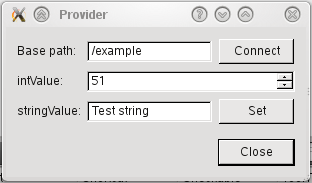

|
Home · All Classes · All Functions · | |
Files:
The Publish and Subscribe example shows how to use the Qt Publish and Subscribe API to publish and retrieve values from the platforms Publish and Subscribe system.
This example program can act either a provider of Value Space content, a consumer of a Value Space content or both. It can also optionally act as the Value Space Manager. The behavior is selected by passing a combination of three optional command line parameters when starting the program. If no parameters are supplied the program defaults to acting as both a provider and consumer.
| Parameter | Description |
|---|---|
| -server | Starts the Value Space Server. Only one instance should be started with the this parameter. This parameter is only needed if the Value Space will use a layer that has a client-server architecture and a server needs to be started. |
| -provider | Publish values in the Value Space and create a dialog to control those values directly. |
| -consumer | Create a dialog to view Value Space items. |
When acting as a provider of Value Space content the program creates a ProviderDialog. This dialog contains a widget for setting the base path of the QValueSpaceProvider and widgets for setting the value of the two fixed attributes 'intValue' and 'stringValue'.

We declare three slots which we will use to respond to user input in the dialog.
private slots:
void createNewObject();
void intValueChanged(int value);
void setStringValue();
And connect them to signals from the widgets in the constructor.
connect(ui->connectButton, SIGNAL(clicked()), this, SLOT(createNewObject()));
connect(ui->intValue, SIGNAL(valueChanged(int)), this, SLOT(intValueChanged(int)));
connect(ui->setButton, SIGNAL(clicked()), this, SLOT(setStringValue()));
To publish values in the Value Space we first need to create a QValueSpaceProvider. We do this in the createNewObject() slot, which is also used to handle changes in the base path. After the object is constructed we publish the initial values by explicitly calling the other two slots.
void ProviderDialog::createNewObject()
{
if (provider)
delete provider;
provider = new QValueSpaceProvider(ui->basePath->text());
intValueChanged(ui->intValue->value());
setStringValue();
}
We use QValueSpaceProvider::setAttribute() to set the values in response to dialog input.
void ProviderDialog::intValueChanged(int value)
{
provider->setAttribute("intValue", value);
}
void ProviderDialog::setStringValue()
{
provider->setAttribute("stringValue", ui->stringValue->text());
}
As a final step in the constructor we explicitly call the createNewObject() slot to create an initial QValueSpaceProvider.
createNewObject();
When acting as a consumer of Value Space content the program creates a ConsumerDialog. This dialog contains a widget for setting the base path of the QValueSpaceSubscriber and a table for displaying all of the values directly under base path in the Value Space.

We declare two slots to propagate values from the Value Space to the dialog in response to change notifications from QValueSpaceSubscriber.
private slots:
void changeSubscriberPath();
void subscriberChanged();
To read values from the Value Space we first create a QValueSpaceSubscriber and connect to the contentsChanged() signal.
We explicitly call our itemChanged() slot to populate the table with the initial values.
void ConsumerDialog::changeSubscriberPath()
{
ui->values->clearContents();
if (!subscriber)
subscriber = new QValueSpaceSubscriber(ui->basePath->text(), this);
else
subscriber->setPath(ui->basePath->text());
connect(subscriber, SIGNAL(contentsChanged()), this, SLOT(subscriberChanged()));
subscriberChanged();
}
In response to the contentsChanged() signal we update all the values in the table.
void ConsumerDialog::subscriberChanged()
{
ui->values->clearContents();
QStringList subPaths = subscriber->subPaths();
ui->values->setRowCount(subPaths.count());
for (int i = 0; i < subPaths.count(); ++i) {
QVariant v = subscriber->value(subPaths.at(i));
QTableWidgetItem *pathItem = new QTableWidgetItem(subPaths.at(i));
QTableWidgetItem *valueItem = new QTableWidgetItem(v.toString());
QTableWidgetItem *typeItem = new QTableWidgetItem(v.typeName());
ui->values->setItem(i, 0, pathItem);
ui->values->setItem(i, 1, valueItem);
ui->values->setItem(i, 2, typeItem);
}
}
| Copyright © 2009 Nokia Corporation and/or its subsidiary(-ies) | Qt Mobility 1.0 |